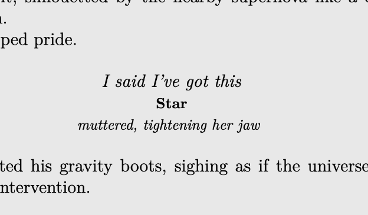
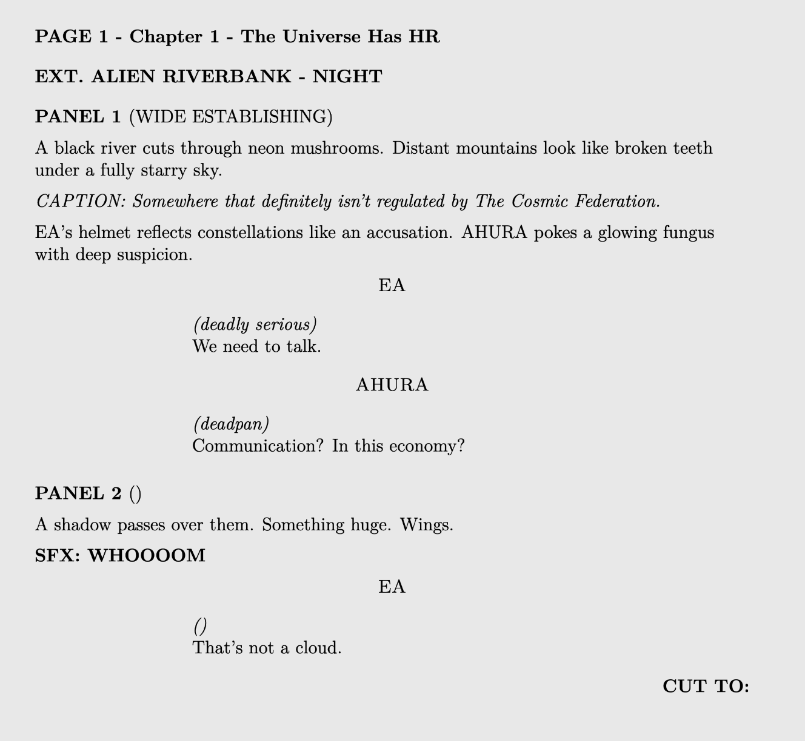

I created SALTA Studio out of the (almost desperate) need to tell
stories. Once, I heard Alan Moore say that storytelling is almost
shamanic. That it was the shamans of the Paleolithic era who started
the tradition. I found that interesting, to say the least. I have many
unwritten stories. I have far fewer that are written. I promise you, I
have a brain full of useless information and somehow I still have room
for stories within stories. Of course, none of that means they're
good. They're great for me. And I can only hope someone else finds
hope, or at least warm feelings, when they read them. If you find
something useful here, feel free to let me know.
You can figure out how to reach me.
You have my thanks
PS:
If you feel like illustrating something, feel free. If you want
that but in a collaboration, hit me.
1. Short Stories
A bunch of very short, badly written stories. Too personal, but I
dunno what else to write.
One
Find It
The Shaman
Asgan
35%
I have no idea why I call them short stories. They are short
for sure.
2. Children Books
For some weird reason, I think kids could read my stories. Maybe
that's projection, but honestly, children can handle a lot more than
we adults assume.
Teteo
Someone once told me my stories were too intense and obscure
for children. I'm not so sure.
3. Graphic Novels
I collect graphic novels. I've tried writing a few over the years,
usually for the wrong reasons. Now I've started my own saga, and I’ve
got a couple ideas for one-off graphic novels too.
Kaíven
Chapter One
Medea
As Above So Below
Waves
Echoes In The Sea
Sometimes I think I should learn to draw or learn to direct
animation. My artistic limitations frustrate me.
4. Misc
These are LaTeX snippets for my stories and related notes and lore of
my cosmologies.
4.1 Snippets

Figure 1: How I do dialogues.

Figure 1: How I do panel, pages and captions.